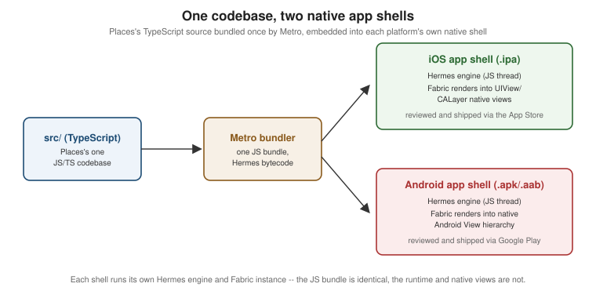

Getting Started with React Native
|
This content was generated with the assistance of AI and should be verified against the official documentation before being relied on in production. |
React Native is Meta’s framework for building native mobile apps with JavaScript and TypeScript, using the same declarative, component-based React model that the React reference covers for the web. The examples in this section are written and verified against React Native 0.87, React 19.2, Expo SDK 57, the New Architecture (Fabric and Turbo Native Modules, the only architecture React Native ships since 0.82), Hermes V1, and the Strict TypeScript API, all introduced properly on React Native Architecture Under the Hood. Every code example in this section builds one running app, Places — a travel-notes app with a list of places, a place-details screen, an "add place" form, favourites, a REST backend, offline-first local persistence, OAuth sign-in, and one native module — so that later pages can build on earlier ones instead of starting fresh each time.
What React Native Is (and Is Not)
React Native compiles your JavaScript/TypeScript UI code down to real, native platform views — a View
becomes a UIView on iOS and an Android View; a Text becomes a native text label — not an HTML page
rendered inside an embedded browser. This is the single most important thing to understand before writing a
line of it: nothing about a React Native screen is a WebView wrapping a website, so a React Native app scrolls,
animates, and responds to touch with the same native primitives (and the same native performance ceiling) as an
app written directly in Kotlin or Swift.
The framework’s own tagline, "learn once, write anywhere", is deliberately not "write once, run anywhere": one
JavaScript/TypeScript codebase produces two separate native apps — an .ipa for iOS and an .apk/.aab
for Android — sharing most business logic, state management, and UI structure, but each still going through its
own native build, its own store review process, and its own platform-specific APIs where the platforms
genuinely differ (permissions dialogs, push notification registration, safe-area insets, back-button handling on
Android). Android and iOS are, in this sense, "different yet the same": the same <FlatList> of Places renders
correctly on both without a single if (Platform.OS === 'ios') branch, but a platform check remains the escape
hatch for the cases — haptics, share sheets, permission prompts — where the two platforms cannot be unified
usefully.
Compared to the alternatives for building a mobile app:
-
Fully native (Kotlin/Swift). Direct access to every platform API on day one and the smallest possible gap between "the platform shipped a new capability" and "the app can use it", at the cost of maintaining two separate codebases and two separate feature-parity schedules — the trade-off React Native exists to avoid for most product code, while still allowing a native module (covered next) wherever that direct access is genuinely needed.
-
Flutter. Also one codebase for both platforms, but Dart and Skia-rendered widgets rather than JavaScript and real native views — Flutter draws its own UI rather than composing platform components, which buys pixel consistency across platforms at the cost of never looking or feeling exactly like a native app by default.
-
Progressive Web Apps and the mobile web. The lowest-friction way to ship to every device from one web codebase, but constrained by what a mobile browser exposes (background execution, deep OS integration, and app-store distribution are all limited or unavailable), which is why Places, like most apps needing offline storage, push notifications, and a native module, is built as a React Native app rather than a PWA.
Choosing a Framework: Expo or the React Native Community CLI
React Native itself is a library, not a turnkey project generator, so every real project starts from one of two officially supported starting points. This section (and every later one in it) recommends Expo as the default, and Places is built as an Expo project throughout — one toolchain covers project creation, native builds, over-the-air updates, and a managed set of first-party native modules, which removes an entire class of native-tooling problems for the vast majority of apps that do not need a fully custom native build pipeline from day one. The Community CLI remains documented below because some projects genuinely need it — heavy custom native code, an existing native app absorbing React Native incrementally (covered later in this section), or an organization standardizing on its own native build tooling.
Expo (recommended)
npx create-expo-app@latest Places --template default
cd Places
npx expo startcreate-expo-app scaffolds a TypeScript project with Expo Router already wired in. From there:
-
Expo Go — Expo’s own pre-built app on the App Store/Play Store — loads the project instantly over Wi-Fi by scanning the QR code
expo startprints, with no native build step at all; it is the fastest inner loop for UI work, but it only bundles Expo’s own curated set of native modules, so it cannot run Places's own Turbo Native Module (covered next) once that module exists. -
A development build — a custom debug build of the app that includes exactly the native modules the project actually depends on, installed once on a simulator/emulator or device and then reused across Fast Refresh sessions the same way Expo Go is — is what every project needs the moment it adds a native module Expo Go does not bundle, and is what Places uses from the native-module page onward.
-
Snack (snack.expo.dev) — Expo’s browser-based playground — runs a small React Native component with no local install at all; useful for trying an isolated snippet before adding it to Places.
-
npx expo run:iosandnpx expo run:androidbuild and install a development build locally (Xcode/Android Studio still required for these two commands specifically, even though day-to-day development with Expo Go or an already-installed development build needs neither).
React Native Community CLI
npx @react-native-community/cli@latest init Places
cd Places
npx react-native run-ios
npx react-native run-androidThis path generates the ios/ and android/ native projects directly into the repository from the start (Expo
generates them on demand, via npx expo prebuild, only when a fully custom native build is needed) and requires
the full native toolchain up front:
| Requirement | Why |
|---|---|
Xcode (macOS only) |
Builds and runs the iOS target; also installs the iOS Simulator and the command-line tools |
Android Studio |
Provides the Android SDK, platform tools ( |
Watchman |
Facebook’s file-watching service; Metro (covered later in this section) uses it to detect source changes efficiently on macOS and Linux. |
JDK 17 |
Required by the Android Gradle Plugin to build the |
Node.js |
The minimum Node major/minor React Native 0.87’s toolchain (Metro, the CLI, Codegen) requires. |
The Generated Project and Running It
Both starting points converge on a similar shape once native projects exist. Places's own top-level layout
(the src/ tree inside it is introduced in full on
Tooling: Metro and Project Structure):
Places/
app/ # Expo Router routes (thin screens delegating into src/features)
src/ # feature-organized application code, see the Tooling page
app.json # Expo app config: name, icons, splash, permissions, plugins
ios/ # native Xcode project (generated by `expo prebuild`, or always present under the CLI)
android/ # native Gradle project (generated by `expo prebuild`, or always present under the CLI)
metro.config.js # Metro bundler configuration
babel.config.js # Babel configuration (the `babel-preset-expo` preset)
tsconfig.json # TypeScript configuration (extends `expo/tsconfig.base`)
package.jsonRunning on a simulator, an emulator, and a device
-
iOS Simulator —
npx expo run:ios(orrun-iosunder the Community CLI) builds and boots the app in whichever simulator Xcode has selected; no physical Mac hardware constraint beyond needing macOS to run Xcode at all. -
Android emulator —
npx expo run:android(orrun-android) needs an Android Virtual Device already created in Android Studio’s Device Manager and running, or it boots the first one it finds. -
A physical device — with Expo Go installed, scanning the terminal’s QR code from
expo startloads the project directly over the same Wi-Fi network; with a development build installed once viaexpo run:ios/expo run:androidtargeting the connected device, every subsequentexpo startreconnects to it the same way. On Android,adb devicesconfirms a physical device is visible to the toolchain beforerun:androidtargets it, andadb reverse tcp:8081 tcp:8081is the fallback when a USB-connected device cannot reach Metro over Wi-Fi.
The Dev Menu and Fast Refresh
Shaking a physical device, or pressing Cmd+D (iOS Simulator) / Cmd+M (Android emulator on macOS) opens the Dev Menu — reload, open the JS debugger, toggle performance overlays, and (on a development build) open React Native DevTools directly. Fast Refresh is on by default and needs no menu action: saving a file re-renders just the changed component tree in place, preserving component state, while a change to something Fast Refresh cannot safely hot-swap (e.g. a change outside a React component) triggers a full reload automatically instead.
Troubleshooting the first run
-
Port 8081 already in use. Metro’s default port;
npx expo start --port 8082(ornpx react-native start --port 8082) picks another one, or kill whatever else is bound to 8081. -
Stale Metro cache.
npx expo start --clear(ornpx react-native start --reset-cache) clears Metro’s transform cache — the first thing to try when a change does not seem to take effect, or a module resolution error persists after a dependency change. -
pod installfailures (iOS). The Community CLI path (andexpo prebuild) runs CocoaPods to resolve native iOS dependencies intoios/Pods; a failure here after adding a native dependency is almost always fixed bycd ios && pod install --repo-update. -
Gradle sync/build failures (Android).
cd android && ./gradlew cleanclears stale build outputs; a Gradle daemon stuck after a JDK version change is fixed by./gradlew --stopbefore the next build.
The Places App: a First Screen
Places's App.tsx starts as the simplest possible root component — a single screen composed from View,
Text, and StyleSheet — before Navigation (later in this section)
replaces it with the real RootNavigator:
// app/App.tsx
import { StyleSheet, Text, View } from 'react-native';
export default function App() {
return (
<View style={styles.container}>
<Text style={styles.title}>Places</Text>
<Text style={styles.subtitle}>Your travel notes, all in one place.</Text>
</View>
);
}
const styles = StyleSheet.create({
container: {
flex: 1,
alignItems: 'center',
justifyContent: 'center',
backgroundColor: '#fff',
},
title: {
fontSize: 28,
fontWeight: '700',
},
subtitle: {
marginTop: 8,
fontSize: 15,
color: '#666',
},
});StyleSheet.create does not produce CSS — it validates the style object shape at creation time and hands back
plain objects consumed the same way inline style objects are, one property name away from the CSS box model
(flex, alignItems, justifyContent) that
Flexbox Layout (later in this section) covers in full.
`package.json’s scripts drive the same commands introduced above, whichever framework generated the project:
{
"scripts": {
"start": "expo start",
"android": "expo run:android",
"ios": "expo run:ios",
"lint": "eslint .",
"test": "jest"
}
}One Codebase, Two Native App Shells

Metro (covered in full later in this section)
bundles Places's source into a single JavaScript bundle; that same bundle is embedded into both the iOS .ipa
and the Android .apk/.aab, each running its own Hermes engine and rendering through Fabric into that
platform’s own native views — one build artifact per platform, from one JavaScript source tree.